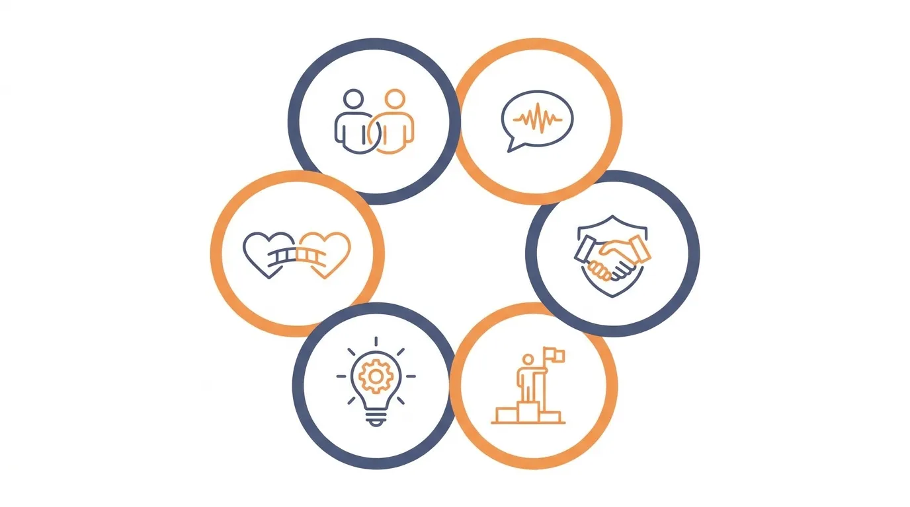

Banyak perusahaan mulai mempertimbangkan kegiatan outbound ketika menyadari ada yang kurang dalam kerja sama tim, komunikasi antar divisi, atau semangat kerja karyawan.
DAFTAR ISI
- 1. Apa Itu Outbound Perusahaan?
- 2. Tujuan Outbound Perusahaan
- 3. Jenis Kegiatan dalam Outbound Perusahaan
- 4. Bagaimana Memilih Program Outbound Perusahaan yang Tepat?
- 5. Outbound untuk Karyawan: Aktivitas yang Bisa Menguji Kerja Sama dan Komunikasi
- 6. Hal yang Perlu Diperhatikan Saat Memilih Program Outbound
- 7. Memilih Lokasi dan Program Outbound Perusahaan di Malang
- 8. Tips Agar Outbound Perusahaan Memberikan Manfaat
- FAQ
Namun sebelum menentukan tanggal dan lokasi, penting untuk memahami dulu apa sebenarnya yang ingin dicapai dari kegiatan ini.
Outbound perusahaan sering disalahpahami sebagai sekadar acara jalan-jalan atau bermain bersama di luar kantor. Padahal, jika dirancang dengan tepat, kegiatan ini bisa menjadi alat yang cukup efektif untuk membangun kerja sama, melatih komunikasi, mengasah kepemimpinan, hingga mempererat hubungan antaranggota tim. Perbedaannya terletak pada satu hal: tujuan yang jelas sebelum program disusun.
Artikel ini akan membahas konsep outbound perusahaan secara menyeluruh mulai dari pengertiannya, tujuan-tujuan yang bisa dicapai, jenis kegiatan yang tersedia, hingga cara memilih program yang benar-benar sesuai dengan kebutuhan tim Anda.
1. Apa Itu Outbound Perusahaan?
Outbound perusahaan adalah kegiatan yang dirancang untuk mengembangkan aspek-aspek tertentu dalam sebuah tim kerja, biasanya dilakukan di luar lingkungan kantor dan melibatkan aktivitas fisik, permainan kelompok, atau tantangan yang membutuhkan interaksi antaranggota.
Konsepnya berbeda dari sekadar rekreasi atau liburan bersama. Rekreasi biasanya bertujuan untuk relaksasi dan hiburan semata, tanpa target pengembangan tertentu. Outbound, di sisi lain, dirancang dengan struktur aktivitas yang mengarah pada hasil tertentu misalnya melatih peserta untuk berkoordinasi dalam tekanan waktu, atau memaksa mereka berkomunikasi dengan cara yang tidak biasa.
Perbedaan mendasar ini penting dipahami karena akan memengaruhi bagaimana perusahaan menyusun program. Kegiatan yang hanya berisi permainan tanpa arah jelas cenderung menyenangkan di hari itu saja, tapi jarang meninggalkan dampak jangka panjang pada dinamika tim.
Karena itu, sebelum membahas jenis-jenis kegiatan, langkah pertama yang perlu dilakukan perusahaan adalah menentukan tujuan. Tujuan inilah yang akan menjadi dasar dalam memilih jenis aktivitas, durasi, hingga fasilitator yang dibutuhkan.
2. Tujuan Outbound Perusahaan
Setiap perusahaan biasanya punya alasan berbeda mengadakan outbound. Berikut beberapa tujuan yang paling umum menjadi dasar penyusunan program.

Ilustrasi enam tujuan utama kegiatan outbound perusahaan. (Ilustrasi)Meningkatkan Kerja Sama Tim
Kerja sama adalah fondasi dari hampir semua aktivitas outbound. Kegiatan yang dirancang dengan baik akan menempatkan peserta pada situasi yang hanya bisa diselesaikan jika mereka bekerja sebagai satu unit, bukan individu yang berjalan sendiri-sendiri.
Melalui tantangan semacam ini, peserta belajar untuk saling mengandalkan, membagi tugas, dan memahami peran masing-masing dalam mencapai tujuan bersama sesuatu yang sering kali sulit terlihat dalam rutinitas kerja sehari-hari.
Melatih Komunikasi
Banyak masalah dalam tim kerja sebenarnya berakar dari komunikasi yang kurang efektif, bukan kurangnya kemampuan teknis. Aktivitas outbound bisa dirancang khusus untuk menonjolkan masalah ini secara langsung.
Misalnya, ada aktivitas yang membatasi cara peserta menyampaikan instruksi, sehingga mereka dipaksa mencari cara komunikasi yang lebih jelas dan efisien. Pengalaman ini sering membuka mata peserta tentang pola komunikasi mereka sehari-hari.
Membangun Kepercayaan Antaranggota Tim
Kepercayaan tidak bisa dibangun hanya lewat instruksi atasan. Ia terbentuk dari pengalaman bersama, termasuk pengalaman saling mengandalkan dalam situasi yang menantang.
Kegiatan outbound yang tepat bisa menciptakan momen-momen kecil di mana peserta merasakan langsung bagaimana rasanya dipercaya dan mempercayai rekan kerja, sesuatu yang sulit direplikasi di ruang meeting.
Mengembangkan Kepemimpinan
Outbound juga sering dimanfaatkan untuk melihat dan mengasah potensi kepemimpinan dalam tim. Dalam situasi tanpa struktur formal seperti di kantor, seringkali muncul karakter kepemimpinan yang tidak terlihat sehari-hari.
Aktivitas yang menuntut pengambilan keputusan cepat atau pembagian peran dalam kelompok bisa menjadi ruang latihan yang baik bagi calon pemimpin tim, sekaligus memberi masukan bagi manajemen tentang siapa yang punya potensi tersebut.
Melatih Problem Solving
Kemampuan memecahkan masalah secara kolektif adalah keterampilan yang terus dibutuhkan, apa pun industrinya. Aktivitas problem solving dalam outbound biasanya dirancang dalam bentuk tantangan atau teka-teki yang harus diselesaikan bersama dalam waktu terbatas.
Prosesnya melatih peserta untuk berpikir kreatif, mendengarkan ide orang lain, dan mengambil keputusan bersama di bawah tekanan pola yang sering relevan dengan tantangan kerja yang sesungguhnya.
Membangun Hubungan yang Lebih Baik Antar Karyawan
Terakhir, tujuan yang tidak kalah penting adalah mempererat hubungan personal antarkaryawan, terutama lintas divisi yang jarang berinteraksi langsung dalam pekerjaan sehari-hari.
Hubungan personal yang lebih hangat sering kali berdampak pada kenyamanan kerja, kolaborasi lintas tim, dan suasana kerja yang lebih positif secara keseluruhan.
3. Jenis Kegiatan dalam Outbound Perusahaan
Setelah tujuan ditentukan, langkah berikutnya adalah memilih jenis kegiatan yang sesuai. Secara umum, kegiatan outbound perusahaan bisa dikelompokkan ke dalam beberapa kategori berikut.
- Team Building, aktivitas yang berfokus pada penguatan kerja sama dan kekompakan kelompok.
- Problem Solving Activities, tantangan yang mengharuskan peserta menyelesaikan masalah bersama.
- Communication Games, permainan yang dirancang untuk melatih cara peserta menyampaikan dan menerima informasi.
- Leadership Activities, kegiatan yang memberi ruang bagi peserta untuk mengambil peran memimpin kelompok.
- Fun Games yang Memiliki Tujuan, permainan ringan yang tetap dirancang dengan target pengembangan tertentu, bukan sekadar hiburan.
- Aktivitas Outdoor, kegiatan berbasis alam terbuka yang biasanya menggabungkan unsur fisik dengan tantangan kelompok.
Keenam kategori ini bisa dikombinasikan sesuai kebutuhan. Pembahasan lebih rinci tentang bagaimana setiap jenis kegiatan ini dirancang agar tidak sekadar menjadi permainan tanpa arah bisa Anda simak lebih lanjut di Kegiatan Outbound Perusahaan yang Tidak Sekadar Main Game.
4. Bagaimana Memilih Program Outbound Perusahaan yang Tepat?
Memilih program outbound bukan sekadar soal mencari lokasi yang menarik. Ada beberapa faktor yang sebaiknya dipertimbangkan agar kegiatan benar-benar memberikan manfaat.
| Faktor | Yang Perlu Dipertimbangkan |
|---|---|
| Tujuan kegiatan | Apa hasil yang ingin dicapai kerja sama, komunikasi, atau kepemimpinan? |
| Karakteristik peserta | Usia, latar belakang, dan kebiasaan kerja tim |
| Jumlah peserta | Aktivitas kelompok kecil berbeda pendekatannya dengan kelompok besar |
| Durasi | Setengah hari, satu hari penuh, atau beberapa hari |
| Kondisi fisik peserta | Apakah ada peserta dengan keterbatasan fisik tertentu |
| Lokasi | Aksesibilitas dan kesesuaian dengan jenis aktivitas |
| Anggaran | Kesesuaian biaya dengan skala dan kualitas program |
| Jenis aktivitas | Relevansi aktivitas dengan tujuan yang sudah ditetapkan |
Menentukan tujuan kegiatan sejak awal akan mempermudah proses seleksi berikutnya, karena semua faktor lain pada dasarnya menyesuaikan dengan tujuan tersebut.
5. Outbound untuk Karyawan: Aktivitas yang Bisa Menguji Kerja Sama dan Komunikasi
Salah satu fokus yang paling sering dicari perusahaan dalam program outbound adalah aktivitas yang benar-benar bisa menguji, bukan sekadar melatih, kerja sama dan komunikasi karyawan.
Ada perbedaan pendekatan antara aktivitas yang sifatnya melatih secara umum dengan aktivitas yang dirancang khusus untuk melihat sejauh mana tim mampu berkoordinasi di bawah tekanan.
Jika Anda ingin memahami lebih dalam jenis-jenis aktivitas semacam ini beserta cara memilihnya berdasarkan kondisi karyawan, pembahasan lengkapnya tersedia di Kegiatan Outbound Perusahaan yang Tidak Sekadar Main Game.
6. Hal yang Perlu Diperhatikan Saat Memilih Program Outbound
Selain faktor pemilihan program di atas, ada beberapa hal teknis yang sering luput dari perhatian namun cukup krusial.
- Tujuan, pastikan setiap aktivitas dalam program terhubung jelas dengan tujuan yang sudah ditetapkan.
- Keamanan, periksa standar keselamatan, terutama untuk aktivitas fisik atau outdoor.
- Fasilitator, pastikan ada pihak yang memandu jalannya kegiatan dan memberikan refleksi di akhir sesi.
- Durasi, sesuaikan dengan kapasitas dan jadwal kerja tim.
- Lokasi, pertimbangkan akses, cuaca, dan kenyamanan peserta.
- Peralatan, pastikan kelengkapan dan kondisi peralatan yang digunakan.
- Kesesuaian aktivitas, hindari memilih aktivitas hanya karena terlihat seru tanpa mempertimbangkan relevansinya.
- Anggaran, sesuaikan dengan skala kegiatan yang direncanakan.
7. Memilih Lokasi dan Program Outbound Perusahaan di Malang
Bagi perusahaan yang mempertimbangkan Malang sebagai lokasi kegiatan, ada beberapa hal spesifik yang perlu dicek sebelum menentukan pilihan mulai dari jenis program yang ditawarkan hingga fasilitas pendukung di lokasi.
Pembahasan lengkap mengenai apa saja yang perlu diperiksa sebelum memilih program outbound di Malang bisa Anda baca di Outbound Perusahaan di Malang: Hal yang Perlu Dicek Sebelum Memilih Program.
8. Tips Agar Outbound Perusahaan Memberikan Manfaat
Agar kegiatan tidak berhenti sebagai pengalaman yang menyenangkan sesaat, berikut beberapa hal yang bisa membantu memastikan manfaatnya benar-benar terasa.
- Diskusikan tujuan kegiatan dengan tim internal sebelum menghubungi penyedia program.
- Libatkan perwakilan karyawan dalam proses perencanaan agar program lebih relevan dengan kebutuhan mereka.
- Sediakan sesi refleksi di akhir kegiatan untuk mengaitkan pengalaman outbound dengan situasi kerja sehari-hari.
- Lakukan evaluasi setelah kegiatan selesai untuk melihat apakah tujuan awal tercapai.
- Jangan menjadikan outbound sebagai kegiatan tahunan yang rutin tanpa evaluasi sesuaikan programnya dengan kebutuhan tim yang mungkin berubah setiap tahun.